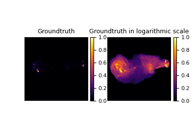

plot_curves
- deepinv.utils.plot_curves(metrics, save_dir=None, show=True)[source]
Plots the metrics of a Plug-and-Play algorithm.
Examples using plot_curves:

Radio interferometric imaging with deepinverse
Radio interferometric imaging with deepinverse


Plug-and-Play algorithm with Mirror Descent for Poisson noise inverse problems.
Plug-and-Play algorithm with Mirror Descent for Poisson noise inverse problems.


PnP with custom optimization algorithm (Condat-Vu Primal-Dual)
PnP with custom optimization algorithm (Condat-Vu Primal-Dual)